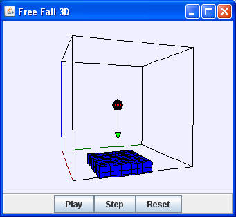

The Free Fall 3D model simulates the same physics as the 2D Free Fall model but with a 3D View of the model's data. The ball falls with constant acceleration g=-9.8 m/s2 in the z direction. Click-dragging on the ball changes its height but leaves its velocity unchanged. The reset button stops the animation and sets the initial conditions to y=1.8 and vy=0.
The Free Fall 3D model is a designed to teach EJS modeling. Right click within the simulation to examine this model in the EJS modeling and authoring tool.
The Free Fall 3D model was created by Wolfgang Christian using version 4.3 of the Easy Java Simulations (EJS) authoring and modeling tool. You can examine and modify a compiled EJS model if you run the program by double clicking on the model's jar file. Right-click within the running program and select "Open EJS Model" from the pop-up menu to copy the model's XML description into EJS. You must, of course, have EJS installed on your computer.
Information about EJS is available at: <http://www.um.es/fem/Ejs/> and in the OSP ComPADRE collection <http://www.compadre.org/OSP/>.